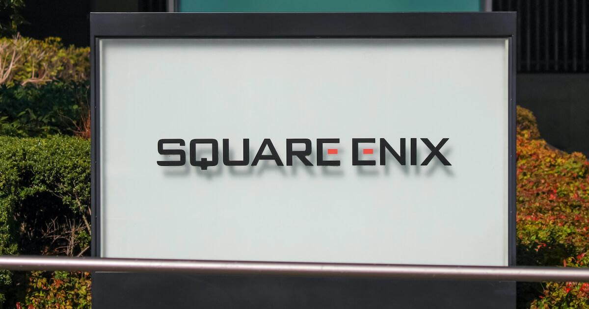

|

史克威爾艾尼克斯是株式會社史克威爾艾尼克斯控股所領導的跨國企業集團。
原是日本電子遊戲開發、發行及經銷的株式會社史克威爾艾尼克斯（日語：株式会社スクウェア・エニックス），其以電子角色扮演遊戲系列Final
Fantasy、勇者鬥惡龍及動作角色扮演遊戲系列王國之心而知名。2008年10月1日改組控股公司，另成立新的子公司法人承繼商業名稱及業務。
公司總部現位於東京都新宿區的新宿東區廣場大廈。
公司持有以大型電玩遊戲太空侵略者及泡泡龍而知名的太東，以及被史克威爾艾尼克斯歐洲併入的原遊戲發行商Eidos Interactive。
史克威爾艾尼克斯現在發行全部Eidos的智慧財產權，並執行Eidos的開發工作室。
Eidos最知名的發行作品有古墓奇兵系列、刺客任務系列、駭客入侵系列和神偷系列。
代表人物
福島康博（名譽會長）
松田洋祐（代表董事與社長）
菲爾·羅傑斯（史克威爾艾尼克斯歐洲CEO）
總部
日本東京都新宿區新宿六丁目27番30號 新宿東區廣場20F
網站
https://www.hd.square-enix.com/jpn/
|